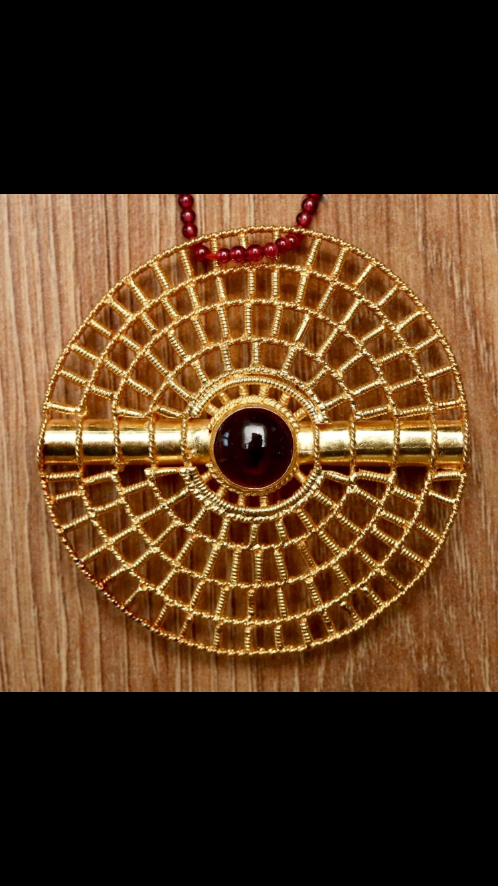
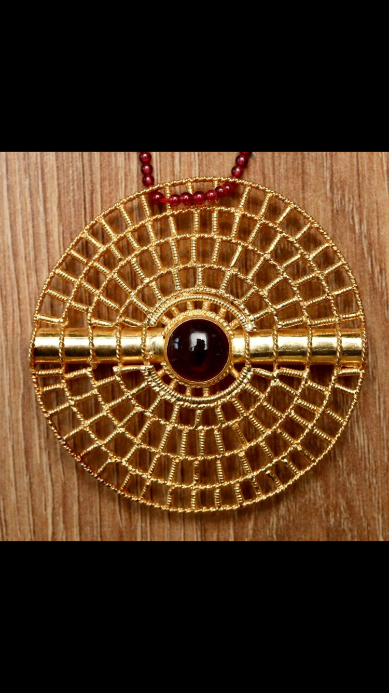

About Us
Based in San Antonio, we specialize in rare African pieces — from vintage gold jewelry and hand-carved furniture to rare collectibles. We also handle bulk phone and accessory exports. Our business is built on trust, heritage, and global reach.
Featured Items
19th Century Ashanti Gold Pendant
Handcrafted in Ghana, this piece carries royal significance.
Handcrafted in Ghana, this piece carries royal significance.
Yoruba Carved Throne Chair
A symbol of power, detailed with spiritual symbols and aged patina.
A symbol of power, detailed with spiritual symbols and aged patina.
Bulk Mobile Phone Exports
Carrier-unlocked phones & accessories, shipped globally with full transparency.
Carrier-unlocked phones & accessories, shipped globally with full transparency.
Rare Collectible
A unique ceremonial collectible, preserved through generations of African heritage.
Antique Furniture Collection
 

Vintage Jewelry
Contact
üìç San Antonio
üìû +1 210-501-1285
WhatsApp: +1 313-420-3253
üìß susansunnyi18@gmail.com